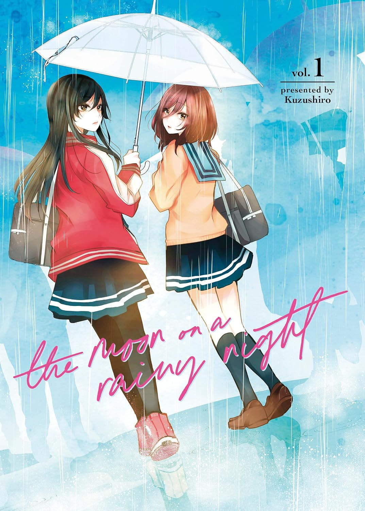

The Moon on a Rainy Night is a Romance Drama manga series written and illustrated by Kuzushiro. The series follows Saki Kindaichi, a piano player who is struggling with whether or not to continue getting lessons, she soon meets Kanon Oikawa, a classmate of hers who is deaf and an ex-piano player. The pair become close friends very fast and this friendship ignites Saki’s passion for playing piano again, all the while she hides her true feelings for Kanon out of a deep-seated fear of rejection and ostracizing (Saki has a big case of internalised homophobia and is deep in the closet). The series deals with the struggles of both disabled people and queer people, and it deals with these topics amazingly.
Being in the closet is a topic in a lot of queer series, but internalised homophobia isn’t really depicted nearly as much as it should be. Saki displays both of these topics incredibly well, she is well aware of her sexuality but has convinced herself that it isn’t normal and everyone will hate her if it gets revealed, she is her own biggest enemy. Saki is constantly holding herself back and trying to keep her feelings a secret (she isn’t very good at it, Kanon’s just kind of oblivious to this stuff), this creates a lot of issues and miscommunication between the pair and while they are able to bounce back, it still leaves Saki even more scared. Kanon’s obliviousness to romance, along with the fact that they need to stick close together in private in order for Kanon to hear her, also creates a lot of misunderstandings, leaving Kanon curious about what’s wrong, and Saki desperately trying to hold herself together. This is what makes the series a slow burn, and despite its slower pace, it never gets boring and it keeps you invested in how things between these two will develop.
The series also deals with the struggles of disabled people, this is seen with Kanon, who is mostly deaf. The series depicts this very respectfully and goes into detail how this affects not only the person themselves but the people around them too. At the start, Kanon is shown to be closed off from everyone, actively avoiding anyone who tries to get close. Thanks to Saki’s determination to get to know her despite this (and her pretty stupid yet surprisingly smooth moves), Kanon begins to open up to her and shows that she is much bubblier and more energetic than her previously cold demeaner implied. As the series progresses, Kanon opens up to people more, and even manages to fix an old friendship that had fallen apart due to both of their issues. Her closing herself off from others and convincing herself that she couldn’t ever get close to someone is also what left her oblivious to things like romance and crushes, much to the internal dismay of Saki. The series also shows the difference between fairness and equality, fairness is when things are adjusted for the needs of the less fortunate, equality is when things are made even for everyone. in the case of disabled people (and most other minorities), fairness is the better option and the series shows this, with its example being that there should be a way for people to access subtitles in the cinema whenever, instead of having to go to a specific and rarer showing.
Again, I haven’t gone over everything in the series or all of my thoughts, but I hope this has made it clear how well written this series is. I’d recommend it to anyone who likes a good romance, or who wants to see some well-done representation. I’m very much looking forward to the upcoming anime adaptation.
Rating: 9/10
Back To Home Page